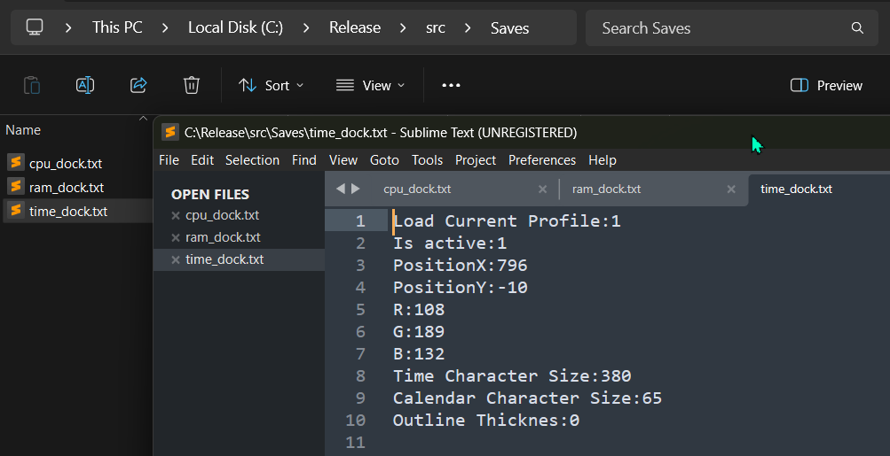

Home
About the creator
Release notes
Setup MyWidget
Instructions
PROGRAM TERMINATION: In order to close the program you need to open Task Manager, search for "DOCK.exe" and end the task.

WIDGET CUSTOMIZATION: To customize a widget (Postion, Scale, etc.) you need to navigate to the release folder and then "src/Saves/..." and then choose the widget you wish to modidy. Watch the changes being applied at real time.